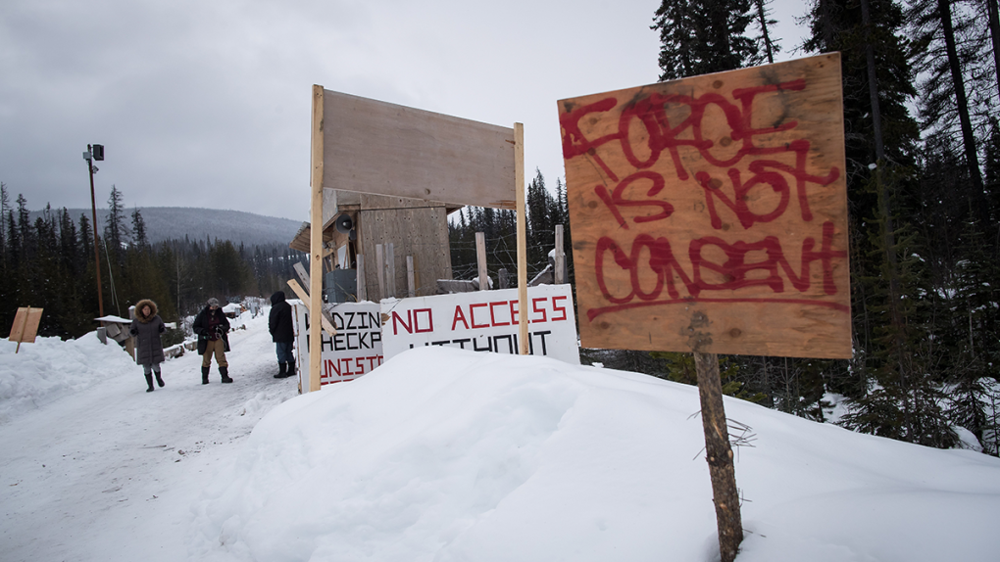

SMITHERS, B.C. -- A company building a natural gas pipeline though northwestern British Columbia says it could delay work in an area at the centre of a dispute with a First Nation, but it is ready to resume construction. The hereditary chiefs of the Wet'suwet'en First Nation issued an eviction notice to Coastal GasLink on the weekend, but the company said today it is willing to "discuss issues of importance" to the chiefs. The company says it is resuming work generally across the pipeline right-of-way, but it believes "dialogue is preferable to confrontation" and will delay workers returning to the area that's under dispute while a negotiated resolution remains possible.
B.C. pipeline construction delay possible as company seeks meeting
